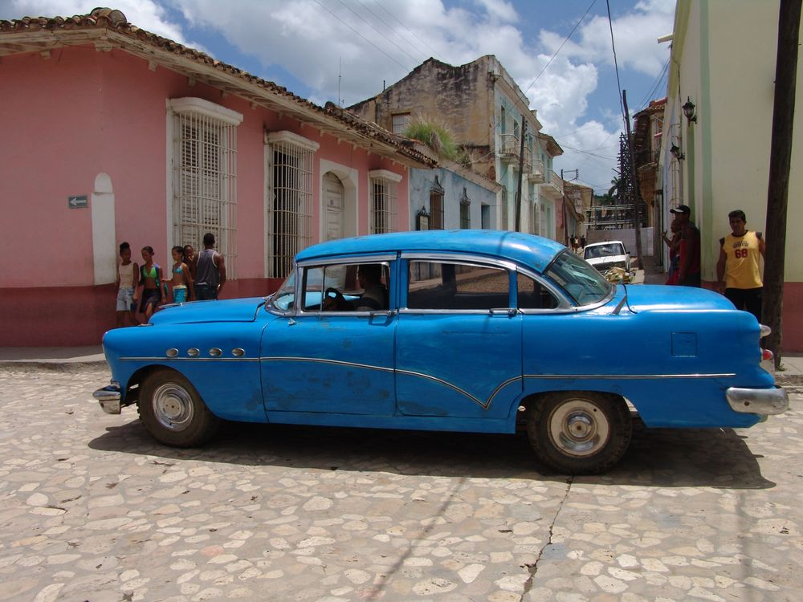

자동차보험 갱신 비교, 2026년은 등급만 알아도 절반입니다

발행일 2026-09-24
30초 요약
| 항목 | 내용 |
|---|---|
| 누가 | 1년짜리 자동차보험을 두고 있는 운전자 전원. 만기가 가까워질수록 비교의 이득이 커집니다 |
| 언제 | 만기 30일 전이 골든타임입니다. 이 시점부터 정확한 보험료가 산출되고, 가격 비교 사이트도 만기 30일 이내 상품만 비교할 수 있습니다 |
| 얼마나 | 할인할증 등급에 따라 같은 사람이라도 보험료가 30%(최대 할증)에서 30%(최대 할인)까지 달라집니다. 무사고로 11등급에서 20등급대까지 내려가면 체감 반값 |
| 비교 방법 | 보험다모아에서 여러 보험사 견적을 한 번에 보고, 마음에 드는 곳은 해당 보험사 다이렉트 화면에서 최종 확정 |
| 가장 큰 함정 | 만기를 몇 달 남기고 임의 해지하면 환급금이 일할이 아니라 단기요율로 계산돼 줄어듭니다. 갱신은 만기일에 맞춰 옮기는 것이 정답 |
1. 누가 대상인가 — 내 등급을 먼저 확인하세요
자동차보험료의 뼈대는 할인할증등급입니다. 전 국민을 1~29등급으로 나누고, 등급별로 보험료에 곱하는 비율(적용률)을 다르게 적용합니다. 최초 가입자는 11등급에서 출발하고, 사고가 없으면 매년 1등급씩 내려갑니다. 숫자가 낮을수록 좋은 등급입니다.
예를 들어 등급 반영 전 보험료가 100만원인 사람 기준(금융당국 발표 예시)으로 보면 이렇습니다.
| 상황 | 등급 | 내야 하는 보험료 |
|---|---|---|
| 사고 이력 다수 (최고 할증) | 1등급 | 200만원 |
| 최초 가입자 | 11등급 | 약 82만 8천원 |
| 무사고 장기 (최대 할인) | 29등급 | 30만원 |
같은 차, 같은 사람인데 사고 이력만으로 200만원과 30만원이 갈립니다. 반대로 말하면 무사고 경력이 쌓일수록 "어디서 드느냐"의 차이가 커진다는 뜻입니다. 내 등급과 할증 원인은 자동차보험 종합포털에서 조회할 수 있습니다.
2. 무엇을 비교해야 하나 — 보험사마다 등급 적용률이 다릅니다
같은 12등급이어도 보험사마다 적용률이 다릅니다. 한 대형 손해보험사가 2026년 6월 말부터 적용한다고 공시한 개인용 요율을 예로 들면 다음 표와 같습니다.
| 등급 | 적용률 | 의미 |
|---|---|---|
| 1Z (최고 할증) | 180.5% | 사고 이력이 많을수록 보험사가 더 깐깐하게 계산 |
| 8Z | 89.0% | 무사고 3~4년차 무렵 |
| 12Z | 70.5% | 무사고 1~2년 |
| 20Z | 47.0% | 무사고 9~10년 |
| 29Z (최대 할인) | 31.5% | 장기 무사고 |
이 표가 중요한 이유는 이겁니다. 등급이 좋아질수록 보험사 간 적용률 격차도 커진다는 것. 11등급대까지는 다들 80% 안팎이라 견적이 비슷비슷하지만, 20등급대부터는 회사별로 수십%P씩 벌어집니다. 무사고 경력이 오래된 운전자일수록 "그냥 갱신"이 가장 손해인 셈입니다.
등급은 보험사가 바뀌어도 그대로 이어집니다. 가입 이력은 전 보험사가 공동 시스템으로 공유하기 때문에, 보험사를 옮겼다는 이유로 등급이 리셋되지 않습니다. 다만 블랙박스·마일리지·안전운전점수 같은 특약 할인은 회사별 기준이 달라 옮겨가면 적용률이 달라질 수 있으니, 특약 구성까지 맞춰서 견적을 받아야 진짜 비교입니다.
3. 제외·주의 — 갱신할 때 손해 보는 세 가지
- 만기 몇 달 남긴 임의 해지는 손해입니다. 내 잘못으로 계약을 깨면 이미 지난 기간에 대해 하루단위(일할)가 아닌 단기요율로 계산해서 환급해 줍니다. 일할보다 환급액이 줄어드는 구조라, "싼 곳이 생겼으니 지금 해지"는 자멸입니다.
- 의무보험은 함부로 해지할 수 없습니다. 대인배상·대물배상은 차량 매매, 등록 말소, 폐차, 중복계약 같은 제한적 사유만 해지가 됩니다.
- 하루라도 비면 과태료입니다. 만기일 다음날부터 미가입 상태가 시작되고, 승용차 기준 대인배상 1만원(10일 이내)에 10일 초과분은 하루 4,000원씩, 대물이 절반 기준으로 쌓입니다. 이륜차는 그보다 낮고 사업용은 3만원부터 시작합니다.
- 사고가 진행 중인데 옮기는 건 피하세요. 합의나 보상이 끝나지 않은 상태에서의 환승은 분쟁 처리가 꼬일 수 있습니다. 사고 종결 후에 옮기는 게 안전합니다.
4. 서류는 없어도 될까
갱신·환승은 신분증과 차량 정보(번호판)만으로 되고, 별도 서류는 거의 없습니다. 다만 아래는 미리 알아두면 돈이 되는 확인 사항입니다.
- 군 운전경력, 법인체 운전직 근무, 해외 가입경력 같은 가입경력 인정 자료 — 최초 가입이나 환승 때 반영을 놓치기 쉬운데, 기간 중 증빙하면 소급 적용·환급이 되는 경우가 있습니다
- 운전자 범위(본인 한정·가족 포함), 대물 한도, 자기부담금, 마일리지 특약 예상 주행거리 — 견적 전에 숫자를 정해둬야 회사 간 비교가 성립합니다
5. 순서 — 만기 30일 전, 이 순서대로
- 만기일 확인. 보험회사에서 만료 75~30일 전, 30~10일 전 두 차례 안내를 보내줍니다. 문자·메일 알림을 켜둡니다.
- 내 조건 고정. 운전자 범위·대물 한도·자기부담금·특약을 작년과 똑같이 맞춰둡니다 (조건이 다르면 비교가 성립 안 함)
- 보험다모아로 여러 회사 동시 견적. 만기 30일 이내 상품만 비교 대상이 됩니다. 표준화된 요율이라 실제와 소수점 차이가 있을 수 있어 "1~2위 후보 고르기" 용도로 씁니다.
- 후보 2~3곳은 보험사 다이렉트 페이지에서 최종 금액 확정. 여기서 특약 적용률이 회사별로 갈라진 최종 숫자가 나옵니다.
- 만기일 전 평일에 가입 완료. 미리 계약해도 보장은 만기일 다음날 0시부터 이어지니 보장 공백은 없습니다. 다만 만기일이 주말·공휴일이면 그 이전 평일까지 마쳐야 합니다. 당일 이후로 넘어가는 순간 미가입 과태료가 시작됩니다.
6. 안 될 때
- 20년 넘은 차량은 비교 사이트에서 조회가 안 됩니다. 잔존가치 고시 한도 때문이니 각 보험사에 직접 견적을 문의하세요.
- 업무용·영업용도 비교 대상에서 제외됩니다. 비교 사이트는 개인용(개인 소유 10인승 이하 자가용) 위주입니다.
- 과태료에 이의가 있으면 부과 통지를 받은 날부터 60일 이내 서면으로 이의신청할 수 있습니다. 의무보험에 가입돼 있었음이 입증되면 취소됩니다.
- 과납 보험료가 의심되면 자동차보험 종합포털에서 환급 신청을 할 수 있습니다. 중복 가입·차량 매도 후 미환급이 흔한 사례입니다.